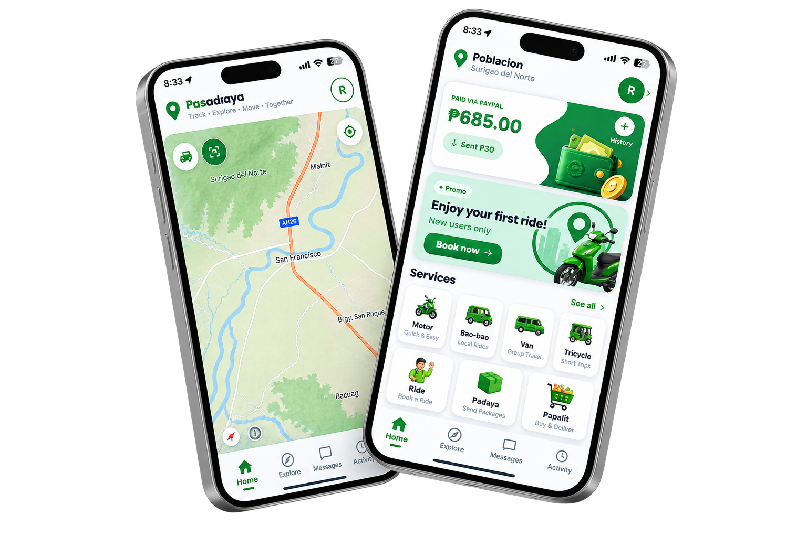

PasaDaya connects passengers and tricycle drivers in the Municipality of Bacuag through one simple mobile app — real-time booking, live GPS tracking, in-app chat and calls, and a dedicated admin dashboard for local transport oversight.

Built specifically for Bacuag's local transport needs — simple enough for every commuter, reliable enough for every driver.
Passengers see their tricycle approach in real time, from pickup to drop-off.
Riders and drivers coordinate pickup details directly inside the app.
Every driver profile is reviewed by municipal admins before going online.
Android APK, direct download — separate apps for passengers and drivers.
From the passenger's first tap to the driver's final drop-off — explore every screen we designed for PasaDaya.
View App Screens